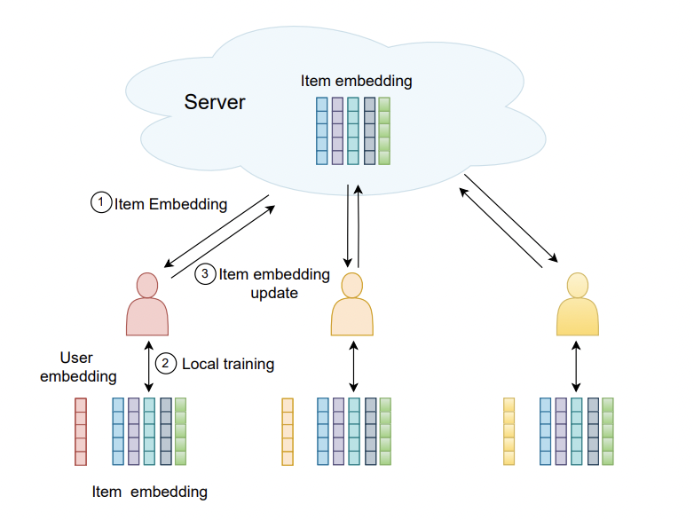

|
Ming Yin I am a first-year Ph.D. student in the ECE department at Duke University, where I am fortunate enough to be supervised by Prof. Yiran Chen and Prof. Helen Li.
I received my B.Eng in Computer Science from School of the Gifted Young, University of Science and Technology of China (USTC) in 2024 at the age of 20. Email / Google Scholar / LinkedIn / |

|
Research InterestI am very interested in Large Language Models, Agents, and Trustworthy AI. |
Publications(* indicates Equal Contribution) |
|

|
Poisoning Federated Recommender Systems with Fake Users
Ming Yin*, Yichang Xu*, Minghong Fang, Neil Gong WWW 2024 |

|
Robust Federated Learning Mitigates Client-side Training Data
Distribution Inference Attacks
Yichang Xu*, Ming Yin*, Minghong Fang, Neil Gong WWW 2024
|
Service
Reviewer: |
More About Me
My Chinese name is '殷明', with 'Ming' as my given name. In Chinese, it combines the characters for 'sun'(日) and 'moon'(月), representing the meaning of brightness and light. |
Thanks Jon Barron for the template.